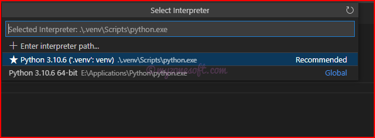

In this article, I will develop a Microservice Application using Python Language with Flask Framework and SQLite Database and expose all CRUD (Create, Read, Update, Delete) Operations as the REST APIs.
Flask Framework will serve as back-end server and I will be using Relational Database known as SQLite Database, for persisting(storing) the data.
By the end of this article, you would learn about how to:
Use SQLAlchemy to work with Relational Database and persist the data.
Create and Expose REST APIs for CRUD Operations using Flask Framework.
How to handle HTTP Requests through REST Controller.
Overview
We will build a Python Flask Rest CRUD API for a Todo Task Application in that:
Each Todo Task has id, title, description, creation date, due date, status and comments.
APIs help to Create, Read, Update, DeleteTodo Tasks.
Below mentioned are the REST APIs for CRUD Operations.
Description
CRUD Operation
HTTP Method
REST API Endpoint
Create New Todo Task
CREATE
POST
/todo-app/tasks/
Fetch All Todo Tasks
READ
GET
/todo-app/tasks/
Fetch One Todo Task
READ
GET
/todo-app/tasks/{id}
Update One Specific Todo Task
UPDATE
PUT
/todo-app/tasks/
Delete One Specific Todo Task
DELETE
DELETE
/todo-app/tasks/{id}
Delete All Todo Task
DELETE
DELETE
/todo-app/tasks/
If you have no time to read this article, but want to try the code for yourself, GitHub location is provided here. Go ahead and clone the code repository.
Definitions
Python is an interpreted, object-oriented, high-level programming language with dynamic semantics. Its high-level built in data structures, combined with dynamic typing and dynamic binding, make it very attractive for Rapid Application Development, as well as for use as a scripting or glue language to connect existing components together. Python supports modules and packages, which encourages program modularity and code reuse.
Flask is a web framework, it’s a Python module that lets you develop web applications easily. It’s has a small and easy-to-extend core: it’s a microframework that doesn’t include an ORM (Object Relational Manager) or such features. Flask is a web application framework written in Python. Flask is based on the Werkzeg WSGI toolkit and the Jinja2 template engine.
SQLAlchemy is a library that facilitates the communication between Python programs and databases. SQLAlchemy is the Python SQL toolkit and Object Relational Mapper that gives application developers the full power and flexibility of SQL.
SQLite is a C-language library that implements a small, fast, self-contained, high-reliability, full-featured, SQL database engine. SQLite is the most used database engine in the world. SQLite is built into all mobile phones.
Microservices is an architecture that allows the developers to develop and deploy services independently. Each service running has its own process and this achieves the lightweight model to support business applications. One of the most popular types of APIs for building Microservices applications is known as “RESTful API” or “REST API”.
REpresentational State Transfer (REST) is an architectural style that defines a set of constraints to be used for creating web services. REST API is a way of accessing web services in a simple and flexible way without having any processing. All communication done via REST API uses only HTTP request.
Application Programming Interface (API) is a software intermediary that allows two applications to talk to each other. To simplify, an API delivers a user requests to a system and sends the system’s response back to a user.
Prerequisites
There are some prerequisites that are required for creating the Microservice Using Python, Flask and SQLite Database Application.
Familiarity with Technology and Frameworks
It is assumed that you have prior knowledge or familiarity with Python Language, Flask Framework, working with RDBMS databases and basic SQL commands, because I will not be covering the basics of these in this article.
If you are not familiar, then it is advised to get the basic knowledge of these before continuing.
Install Python
Install latest version for your platform from here. Select the latest version of Python 3 and download the Windows Installer. Click on the downloaded .exe and follow the on-screen instructions to complete the download.
Integrated Development Environment (IDE) for Code Development
You can use any Text Editor or IDE of your choice. I will be using the Visual Studio Code.
If you wish to use the Visual Studio Code, download the latest version from here. Click on the downloaded .exe and complete the installation.
You can browse and install extensions from within VS Code. Bring up the Extensions view by clicking on the Extensions icon in the Activity Bar on the side of VS Code or the View: Extensions command (Ctrl+Shift+X).
Browse for Python and click on Install button.
Create Base Project
An important concept while working with Python projects is a virtual environment. It allows you to create an isolated Python environment, where all required packages for the project are installed.
Create a Project Environment
Open command prompt and go to the folder where you want to create the Python Project and type following command:
mkdir microservice-python-flask-sqlite
cd microservice-python-flask-sqlite
In that folder, use the following commands (one after another) to create and activate a virtual environment named .venv:
py -3 -m venv .venv
.venv\Scripts\activate
If the activate command generates the message Activate.ps1 is not digitally signed. You cannot run this script on the current system., then you need to temporarily change the PowerShell execution policy to allow scripts to run (see About Execution Policies in the PowerShell documentation):
Set-ExecutionPolicy -ExecutionPolicy RemoteSigned -Scope Process
Open the project folder in VS Code by running code ., or by running VS Code and using the File > Open Folder command.
In VS Code, open the Command Palette (View > Command Palette or (Ctrl+Shift+P)). Then select the Python: Select Interpreter command:
Command Palette in VS Code Editor
The command presents a list of available interpreters that VS Code can find automatically, including virtual environments. Select the folder that starts with .venv

Select the .venv that starts with \.venv
Run Terminal: Create New Terminal (Ctrl+Shift+`)) from the Command Palette, which creates a terminal and automatically activates the virtual environment by running its activation script.
Install Flask and SQLAlchemy
Use the inbuilt Python package manager tool pip for installing dependencies. In your VS Code terminal enter the following one after another.
pip install flask
pip install flask-sqlalchemy
Succeesful installation of FlaskSucceesful installation of SQLAlchemy
Setting up an initial Flask server
Create a new Python file in project root directory with a preferred name. Let us call it app.py
Import Flask class and create its instance for this application
Set the FLASK_APP Environment variable using the command:
$env:FLASK_APP="app.py"
Start the server using the command:
flask run
Start the server
When you navigate to http://localhost:5000/ you should see ‘Hello!’ on the browser
Browser displaying Hello!
Change the port
As we have seen, default port for Python Flask Application Server is 5000. However, we can change the port.
Start the server using the command:
flask run --port 8080
This would start the Python Flask Application Server on the port 8080.
Now that we have base flask app setup complete, lets dive in and start designing our Todo Task Application project.
Enhance the Existing Application to Expose REST APIs
It is now time to enhance our project to include REST API endpoints, so that they can be exposed for consumption by other applications.
Adding Database
We will first setup the database for persisting the data. I will be using Relational Database known as SQLite Database. You can extend this to use any other Relational Database and only Database configurations needs to be changed.
For completing this setup, we will need to update/create few files. Let us go ahead and complete that.
Create /__init__.py
In the Project root folder create the file __init__.py. This will initialize the SQLite Database using the SQLAlchemy Module.
create_task() is the method that will be called for creating new task.
__jsonResponse() is the custom private method created for returning the json response from rest api methods.
with Session() as session: with establish the Session with the sessionmaker for the current transaction.
After the session.commit() or session.flush(), sometimes data will not be refreshed with the latest database value. This is where session.refresh() comes in handy.
Now, Open any REST client and provide values, as per the below table and see the response from the server.
HTTP Method
POST
Endpoint URL
http://localhost:8080/todo-app/tasks
Request Body
{ "title": "Testing the Application", "description": "Testing the Application", "dueDate": "2022-08-31", "status": "NOT_STARTED", "todoTaskCommentsSet": [] }
Server Response for POST API call
Add REST API Endpoint for GET All Operation
Description
CRUD Operation
HTTP Method
REST API Endpoint
Fetch All Todo Tasks
READ
GET
/todo-app/tasks/
For creating this endpoint, we need to update the app.py file
1@app.route('/todo-app/tasks/', methods=['GET'])
2defget_all():
3with Session() as session:
4 data = []
5 taskList = session.query(Tasks).all()
6 7for task in taskList:
8 todoTaskCommentsList = session.query(TodoTaskComments).filter(TodoTaskComments.task_systemTaskId == task.systemTaskId)
9 data.append(__jsonResponse(task, todoTaskCommentsList))
1011return data
Now, Open any REST client and provide values, as per the below table and see the response from the server.
HTTP Method
Endpoint URL
GET
http://localhost:8080/todo-app/tasks
Server Response for GET All API call
Add REST API Endpoint for GET Operation
Description
CRUD Operation
HTTP Method
REST API Endpoint
Fetch One Todo Task
READ
GET
/todo-app/tasks/{id}
For creating this endpoint, we need to update the app.py file
Now, Open any REST client and provide values, as per the below table and see the response from the server.
HTTP Method
Endpoint URL
DELETE
http://localhost:8080/todo-app/tasks/
Response from the Server
Server Response for Delete All API call
Conclusion
With these endpoints’ setup, we have come to an end of this article and we have enabled CRUD (Create, Read, Update, Delete) Operationsusing below REST API Endpoints and they are ready to be consumed by any frontend or other microservice applications.
Description
CRUD Operation
HTTP Method
REST API Endpoint
Create New Todo Task
CREATE
POST
/todo-app/tasks/
Fetch All Todo Tasks
READ
GET
/todo-app/tasks/
Fetch One Todo Task
READ
GET
/todo-app/tasks/{id}
Update One Specific Todo Task
UPDATE
PUT
/todo-app/tasks/
Delete One Specific Todo Task
DELETE
DELETE
/todo-app/tasks/{id}
Delete All Todo Task
DELETE
DELETE
/todo-app/tasks/
Through this article, you have learned about how to:
Use SQLAlchemy to work with Relational Database and persist the data.
Create and Expose REST APIs for CRUD Operations using Flask Framework.
Handle HTTP Requests through REST Controller.
Complete code for this project can be found at GitHub here.
Instructions on how to clone the code repository and run the project are provided on the GitHub project page.
About Prashanth Bhat
Prashanth Bhat has about 15+ years of Developing/Coding knowledge. He loves to work with Technology, learn new things and share his learnings with others. For comments/feedback you can reach here.